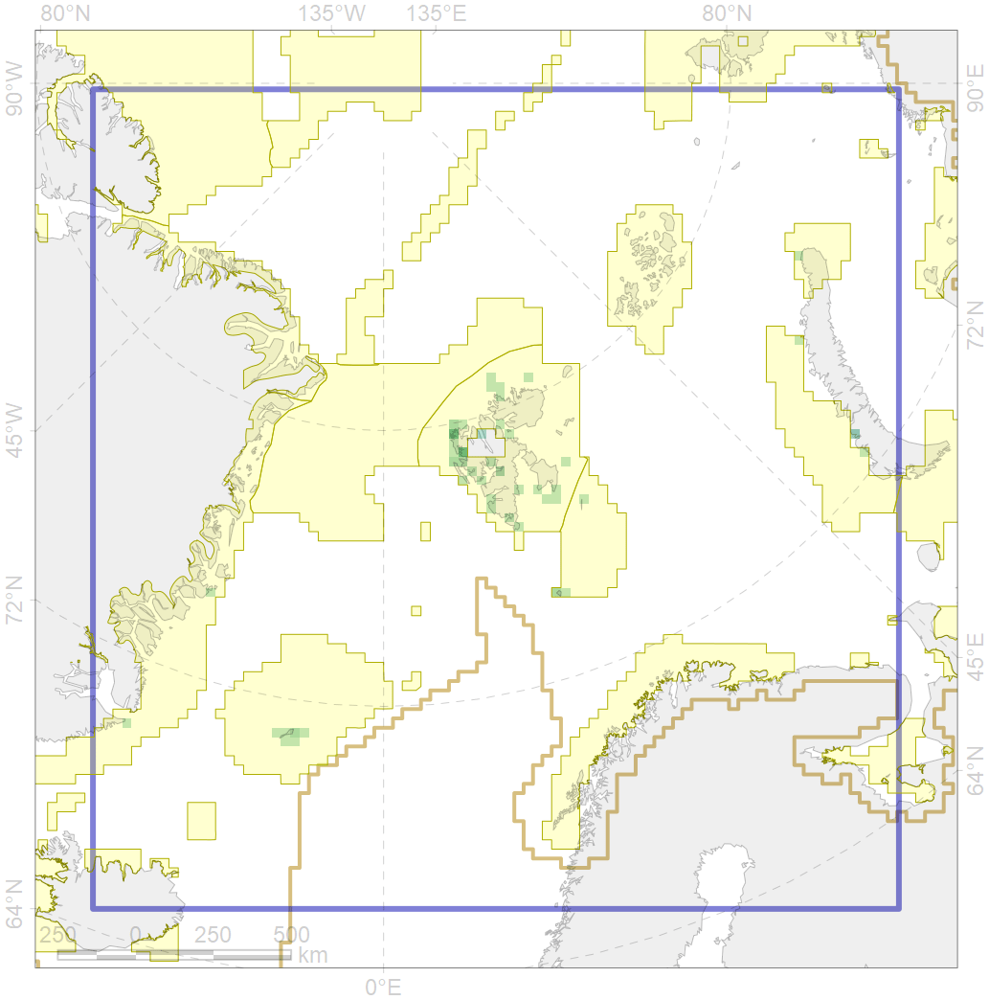
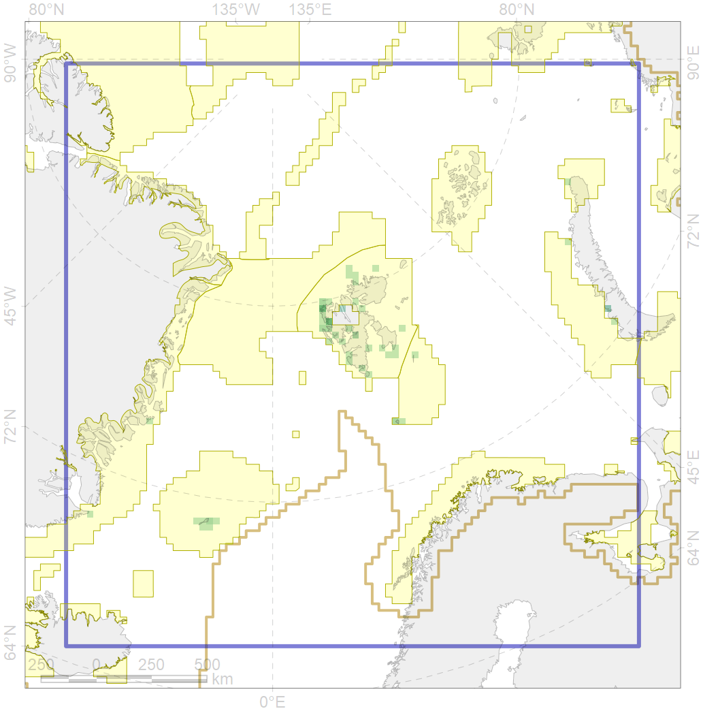

6022
 

| CF ID | 6022 |
| CF Name | Atlantic puffin (Fratercula arctica naumanni) breeding colonies |
| Time Period | 1950-2010 |
| Source(s) | Seabird colony databases of the Barents sea region, Boertmann et al 1996 |
| Seasonality | May-August |
| Depth Horizon | <0 m |
| Methodology | Field Data |
| Author Name | Gavrilo, Tertitski |
| Notes | |
| Conservation Target Set in the Scenario | 0.72 |
| Conservation Target Achieved in the Scenario | 0.950 (Scenario: 131.9%) |
| PAC ID | Proportion in the PAC | Contribution to ArcNet Target Achievement | PAC’s Contribution to the Achieved Target |
|---|---|---|---|
| 19 | 1.2% | 1.6% | 1.2% |
| 21 | 1.2% | 1.3% | 1.0% |
| 30 | 71.3% | 97.5% | 73.9% |
| 31 | 7.6% | 10.6% | 8.0% |
| 32 | 1.2% | 1.6% | 1.2% |
| 34 | 13.5% | 18.7% | 14.2% |
| inner | 95.9% | 131.3% | 99.6% |
| outer | 4.1% | 0.6% | 0.4% |